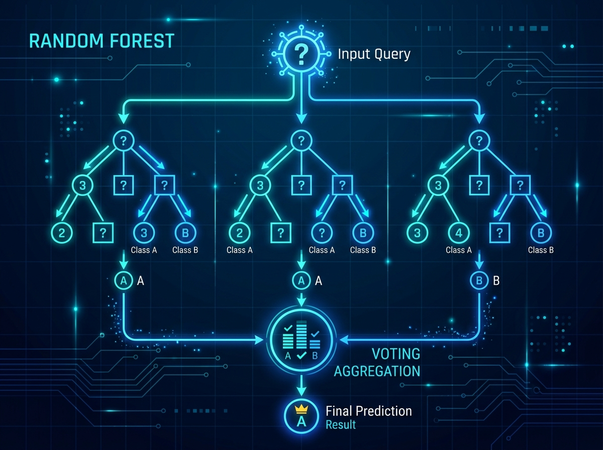

Tiếp nối chuỗi bài học về Machine Learning cơ bản, chúng ta sẽ bắt tay vào thực hiện một dự án thực tế kinh điển: Phân loại khả năng sống sót của hành khách trên tàu Titanic.
Đây là bài toán Classification (Phân loại nhị phân) điển hình: Dựa trên các đặc điểm đầu vào (Features) của hành khách như độ tuổi, giới tính, hạng vé... mô hình sẽ học cách dự đoán hành khách đó "Sống sót" (1) hay "Không sống sót" (0).
Quy trình thực hiện dự án đi qua 5 bước tiêu chuẩn của Học máy:
Bước 1: Thu thập & Khám phá dữ liệu
Chúng ta nạp các thư viện xử lý và tải trực tiếp bộ dữ liệu Titanic tích hợp sẵn trong thư viện trực quan hóa Seaborn để kiểm tra cấu trúc ban đầu:
import pandas as pd
import seaborn as sns
import matplotlib.pyplot as plt
# 1. Tải bộ dữ liệu titanic mẫu
df = sns.load_dataset('titanic')
# Xem 5 dòng đầu tiên để hiểu cấu trúc dữ liệu
print("Dữ liệu thô ban đầu:")
print(df.head())
# Kiểm tra thông tin sơ bộ (số dòng, kiểu dữ liệu, các giá trị null)
print("\\nThông tin dữ liệu:")
print(df.info())Bước 2: Làm sạch & Tiền xử lý dữ liệu
Trong Học máy, quy tắc bất hủ là "Garbage In, Garbage Out" (Dữ liệu rác vào, kết quả rác ra). Máy tính không thể tính toán trực tiếp trên các ô trống mang giá trị rỗng (NaN) và các ký tự chữ cái (như "male", "female").
Hình 6.1: Khái niệm lọc và làm sạch dữ liệu - Data Cleaning (nguồn ảnh được sinh bởi Gemini Pro)
Các phương án làm sạch được áp dụng:
- Điền khuyết (Imputation): Điền các giá trị tuổi bị thiếu bằng giá trị trung vị (Median) để tránh bị lệch do điểm dị biệt.
- Loại bỏ đặc trưng thừa: Bỏ các trường dữ liệu trùng lặp hoặc không giúp ích nhiều cho phân tích như
deck,embark_town,alive. - Mã hóa đặc trưng (Encoding): Ánh xạ giới tính "male" về 0, "female" về 1 và thực hiện One-Hot Encoding cho các cảng biển xuất phát.
# 1. XỬ LÝ DỮ LIỆU THIẾU
df['age'] = df['age'].fillna(df['age'].median())
df['embarked'] = df['embarked'].fillna(df['embarked'].mode()[0])
# 2. LOẠI BỎ CỘT KHÔNG CẦN THIẾT
df = df.drop(columns=['deck', 'embark_town', 'alive', 'class', 'who', 'adult_male'])
# 3. MÃ HÓA DỮ LIỆU (ENCODING)
df['sex'] = df['sex'].map({'male': 0, 'female': 1})
df = pd.get_dummies(df, columns=['embarked'], drop_first=True)
print("\\nDữ liệu sau khi làm sạch:")
print(df.head())Bước 3: Chia tập dữ liệu (Train/Test Split)
Tách tập dữ liệu đặc trưng $\mathbf{X}$ và nhãn mục tiêu $\mathbf{y}$ theo tỉ lệ tiêu chuẩn $80:20$. Việc kiểm tra mô hình trên tập Test độc lập giúp ta đánh giá khách quan và ngăn ngừa hiện tượng học vẹt (Overfitting):
from sklearn.model_selection import train_test_split
X = df.drop('survived', axis=1) # Các đặc trưng đầu vào
y = df['survived'] # Nhãn sống sót (0 hoặc 1)
# Tách tập Train (80%) và Test (20%)
X_train, X_test, y_train, y_test = train_test_split(X, y, test_size=0.2, random_state=42)Bước 4: Huấn luyện mô hình (Training)
Chúng ta sử dụng thuật toán Random Forest Classifier (Rừng quyết định ngẫu nhiên). Đây là thuật toán phân loại dạng Ensemble học tập kết hợp cực kỳ mạnh mẽ.

Hình 6.2: Mô hình biểu quyết số đông của Random Forest Classifier (nguồn ảnh được sinh bởi Gemini Pro)
from sklearn.ensemble import RandomForestClassifier
# Khởi tạo mô hình với 100 cây quyết định song song
model = RandomForestClassifier(n_estimators=100, random_state=42)
# Bắt đầu quá trình huấn luyện
print("Đang huấn luyện mô hình...")
model.fit(X_train, y_train)
print("Huấn luyện hoàn tất!")Bước 5: Đánh giá mô hình (Evaluation)
Sau khi mô hình học xong quy tắc dự báo, ta chạy dự báo trên tập dữ liệu Test chưa từng thấy để so sánh với kết quả thực tế thông qua các chỉ số:
- Accuracy (Độ chính xác tổng quát): Tỉ lệ dự đoán đúng trên tổng số lượng mẫu kiểm thử.
- Precision (Độ chuẩn xác): Tỉ lệ người thực tế sống sót trên tổng số người mô hình dự báo là sống.
- Recall (Độ phủ): Tỉ lệ người mô hình tìm ra được trên tổng số người thực sự đã sống sót ngoài đời thực.
from sklearn.metrics import accuracy_score, classification_report, confusion_matrix
# Mô hình thực hiện dự đoán trên tập Test
y_pred = model.predict(X_test)
# 1. Tính toán độ chính xác chung
acc = accuracy_score(y_test, y_pred)
print(f"\\nĐộ chính xác tổng quát (Accuracy): {acc*100:.2f}%")
# 2. Xuất báo cáo Precision, Recall, F1-Score
print("\\nBáo cáo chi tiết:")
print(classification_report(y_test, y_pred))Hình 6.3: Ma trận nhầm lẫn (Confusion Matrix) đánh giá kết quả thực tế
- 93 hành khách thực tế không sống sót được máy dự đoán chính xác không sống sót.
- 54 hành khách thực tế sống sót được máy dự đoán chính xác đã sống sót.
- Mô hình đạt độ chính xác Accuracy tổng quát rơi vào khoảng 82.12%.
Dự án Titanic không chỉ đơn giản là bài toán dự báo rời rạc, mà còn là bài học vỡ lòng kinh điển giúp chúng ta hiểu rõ luồng đi của dữ liệu trong một dự án AI thực tế: Dữ liệu sạch + Thuật toán phù hợp = Kết quả tin cậy.